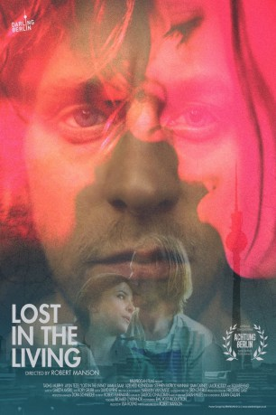

#12018 Lost in the Living
 
 IMDB-Wertung: 7.5 / 10
IMDB-Wertung: 7.5 / 10  Metascore: 0
Metascore: 0 
Der irische Musiker Oisín (Tadgh Murphy) und seine Band kommen für ein paar Gigs nach Berlin. Sie sind gespannt auf die Stadt und ihr legendäres Nachtleben. Als sie ihre Sachen im Hostel auspacken, findet Oisín einen Umschlag mit Geld von seinem Vater in der Tasche. Später, bei ihrem Konzert, scheint erstmal alles prima zu laufen - die Jungs sind gut drauf, das Publikum geht mit - als Oisín mitten auf der Bühne auf einmal ausflippt. Die Wut auf seinen Vater, der die Familie verlassen hat, und der Schmerz über den Tod seiner Mutter überwältigen ihn und er stürzt sich allein ins Berliner Nachtleben. Als er die junge, hübsche Berlinerin Sabine (Aylin Tezel) kennenlernt und sie ihm Orte fernab der Party- und Touristen-Hotspots zeigt, scheint er bei ihr Halt zu finden.
Jahr: 2015
Dauer: 77 Minuten
FSK:
Land: Irland Studio: Darling BerlinTonspuren:
Untertitel: Englisch,
Auflösung: 1080p (1920x1080) Größe: 3921 MB
Genre: Drama
Regisseur: Robert Manson
Drehbuch: Robert Manson
Soundtrack: Gareth Averill
Darsteller:
- Tadhg Murphy als Oisín
 Aylin Tezel als Sabine
Aylin Tezel als Sabine- Adelheid Kleineidam als Barbara
- Nika McGuigan als Grace
 Jer O'Leary als Voice Mail Dad
Jer O'Leary als Voice Mail Dad Lalor Roddy als Finian
Lalor Roddy als Finian Liam Carney als Paddy / Oisín's Dad
Liam Carney als Paddy / Oisín's Dad- Roy Duffy als Roy
- Fabian Greese als Benny
- Stephen Patrick Hanna als Frank
- John Kelly als Radio Voice
- Llia Loffe als Guitarist
- Ian McFarlane als Ian
- Michel Muller als Michel
- Stefan Richter als Stefan
- Jamila Saab als Nani
- Lydia Schamschula als Girl in Room
- Narayan Van Maele als Guy at Hostel
- Ruan Van Vliet als Ruan
- Vid Vidmar als Receptionist
Datei: X:\NEU\Lost in the Living (2015, FSK, 1920x1080).mkv seit 11.11.2019
 Es gibt insgesamt 187 Filme in der Gruppe 'NEU'
Es gibt insgesamt 187 Filme in der Gruppe 'NEU'